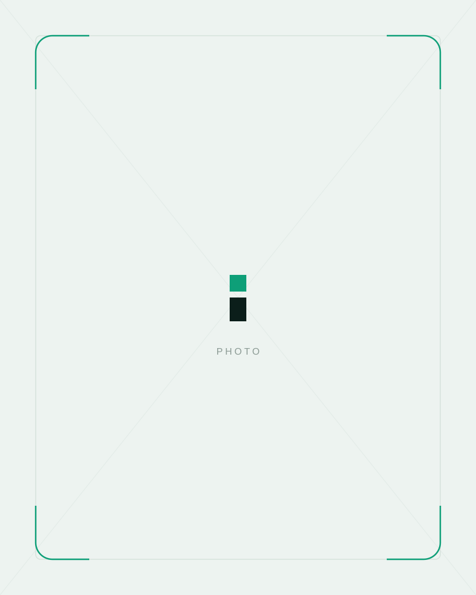

Services
Own the answer, everywhere it's given.
Four disciplines, one outcome: when an assistant answers a buying question in your market, it names you. We do nothing outside this. That focus is why it works.

Answer intelligence
You cannot win an answer you cannot see. We build a live picture of what ChatGPT, Perplexity, Gemini, Claude and Google's AI Overviews say when your buyers ask the questions that decide deals, and we watch it move week by week.
- The full map of buying questions in your category
- Who each engine names today, and the sources it leans on
- Your share of answer against every competitor
- The gaps we will attack first, ranked by revenue

Content studioContent engines trust
Answer engines quote pages that answer plainly, show their working and mark themselves up properly. We build yours that way: direct answers to real questions, clean entity signals and original evidence a model can cite with confidence.
- Question led pages written to be quoted, not skimmed
- Structured data and entity work across the whole site
- Original research and data the engines want to cite
- Fixes to the pages already costing you answers

Citations that count
Engines trust what the web already trusts. We earn your presence in the publications, directories, review platforms and communities that models cite when they talk about your market, so your name arrives with proof attached.
- Placements in the sources engines actually cite
- Review and reputation work on the platforms that matter
- A real presence in the communities models read
- Digital PR aimed at answers, not vanity coverage
Measurement that matters
Being the answer has to show up in the numbers. We report your share of answer, the traffic assistants send you and the enquiries behind it, every month, in plain English. If it is not moving revenue, we say so and change course.
- Share of answer tracked across every major engine
- AI referred traffic and enquiries, separated and counted
- A short monthly report a busy owner actually reads
- An honest view of what worked and what did not
How it works
From first call to first recommendation.
Every engagement runs the same four stages. You always know which one you are in and what comes next.
-
01
The audit
We ask the engines the questions your buyers ask and show you exactly what comes back: who gets named, why, and where you stand. You get an honest picture of the opportunity whether you work with us or not. It costs nothing.
-
02
The foundations
Entity signals, structured data and the site fixes that decide whether engines can read and trust you, sorted in the first month. Most companies are surprised how much was quietly keeping them out of answers.
-
03
The build
Question led content, original evidence and citations every month, always aimed at the answers that produce enquiries rather than the ones that just look good in a screenshot. You get a short report in plain English.
-
04
The compounding
Once an engine starts naming you, the citations, mentions and usage signals reinforce each other, and every month starts further ahead than the last. This is presence you own, not clicks you rent.
One company per market. We never chase the same answers for two competitors. When you work with us, your rivals can't.
See what the engines say about you today.
The audit is free, takes one call, and you keep the findings either way.